What was analysed?
The analysis examines the NidaanKosha-100k-V1.0 dataset provided by Eka Care, described in the report as a collection of diagnostic test results from patients across India. The dataset includes demographic information and diagnostic attributes such as test name, value, unit, specimen and LOINC.
Analytical objective
Explore population-level diagnostic patterns and identify how age and gender relate to selected cardiac and diabetic health indicators.
Tests in focus
Total cholesterol, LDL cholesterol, HDL cholesterol, triglycerides and fasting glucose were selected for detailed analysis.
Who is represented in the dataset?
The demographic analysis establishes the context for subsequent comparisons. Patient ages span 17 to 105 years in the report, with the majority between 30 and 65 years. The analysed population is reported as 42% female and 58% male.
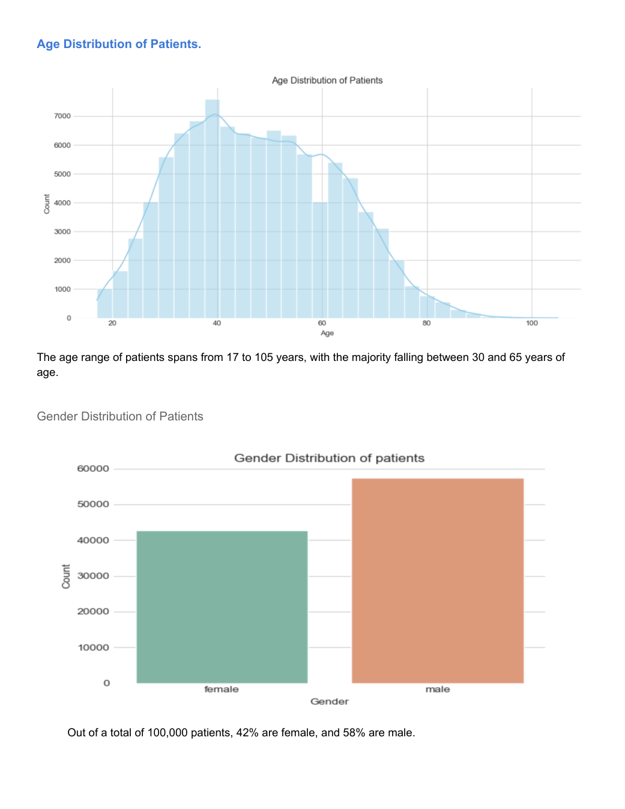
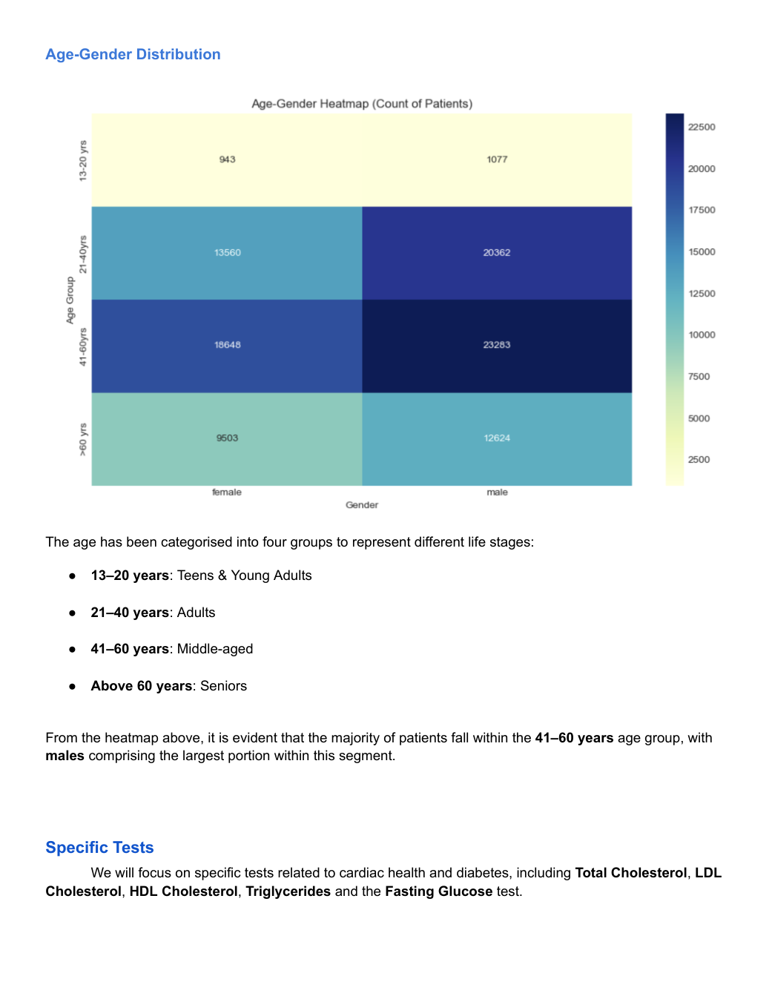
Which demographic groups are most represented?
Distribution analysis and age–gender cross-tabulation.
The 41–60 age group contains the largest share in the report's heatmap.
Demographic context helps interpret differences in later diagnostic analyses.
Exploring cholesterol distributions
The analysis focuses on Total Cholesterol, LDL, HDL and Triglycerides. Distributions are examined against the reference ranges documented in the report, with separate views for patients below 19 years and adult male and female groups.
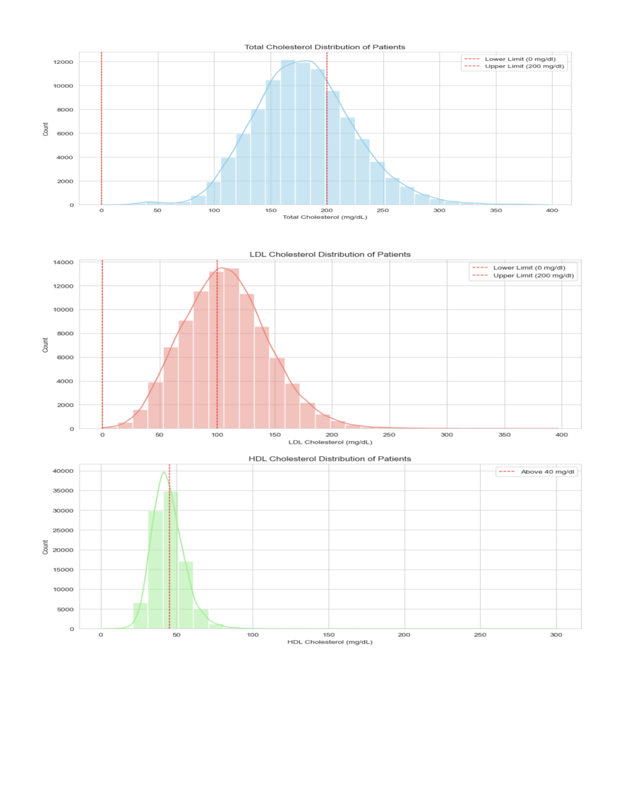
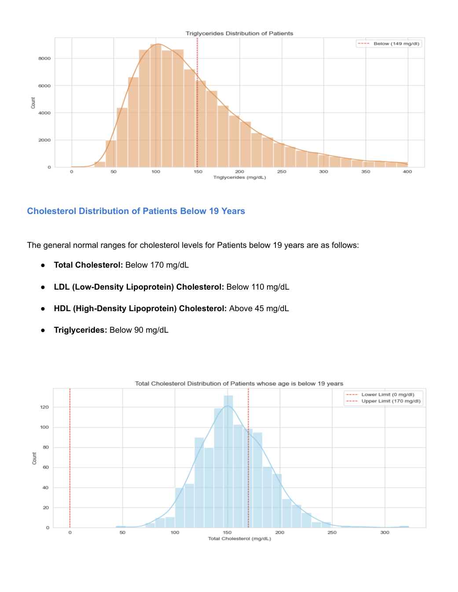
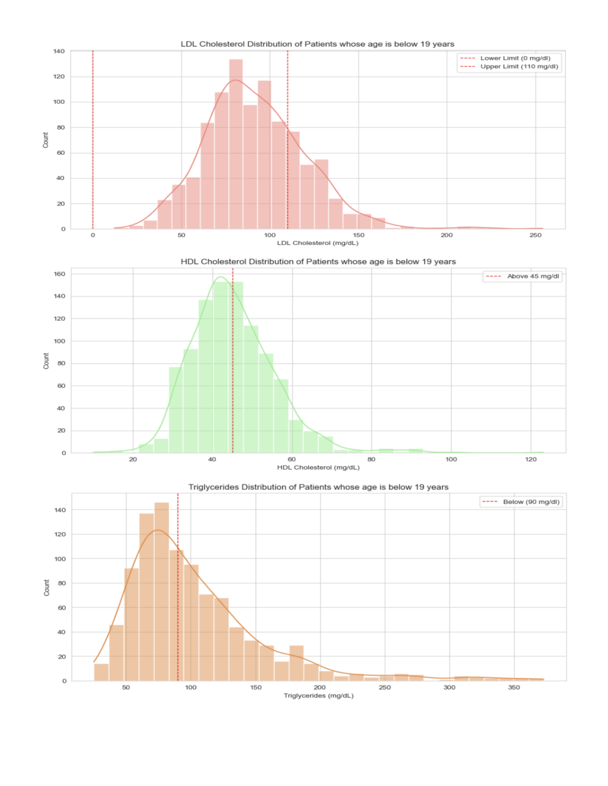
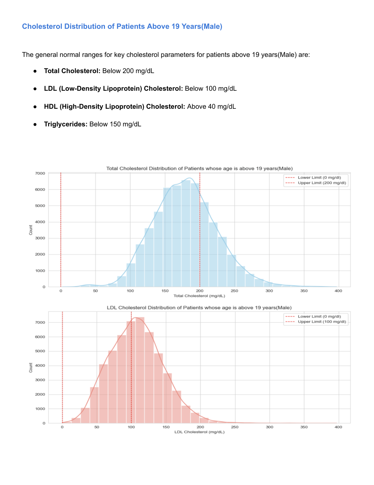
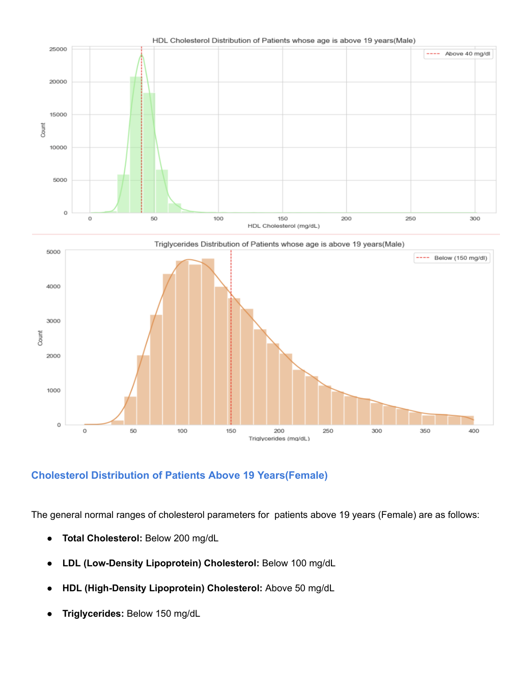
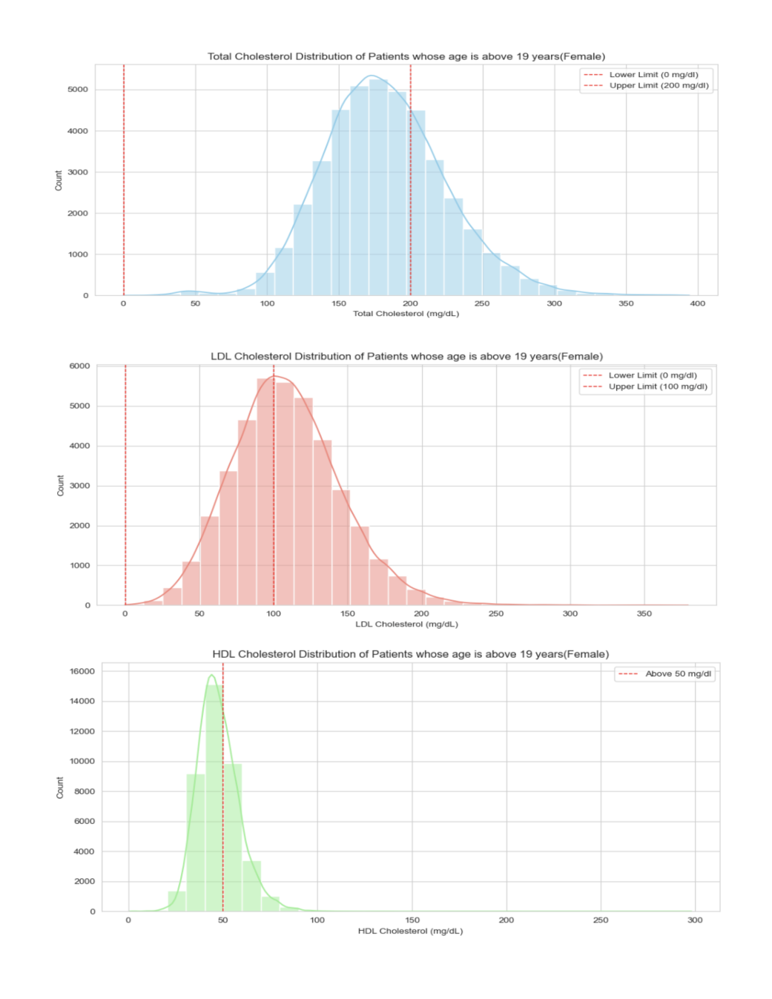
The report concludes that a significant proportion of patients have cholesterol values at or near borderline ranges, motivating a deeper analysis using lipid ratios rather than interpreting each measure in isolation.
From individual tests to lipid ratios
The analysis derives cardiovascular risk indicators by combining cholesterol and triglyceride measures into ratios. Each ratio is then classified into Ideal, Acceptable or High Risk categories using the thresholds documented in the report.
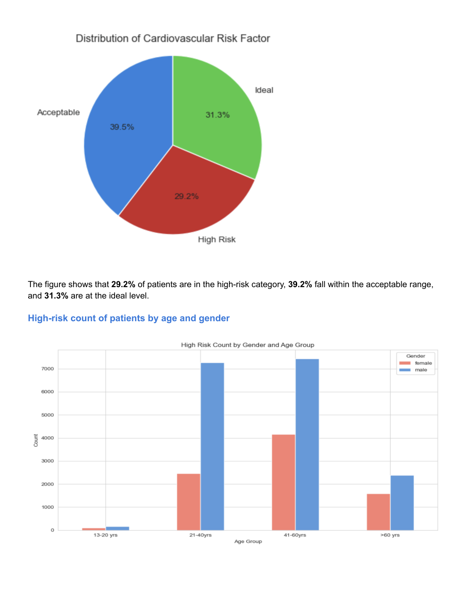
The report identifies 29.2% of patients in the high-risk category, 39.2% in the acceptable category and 31.3% at the ideal level for the cardiovascular risk-factor classification.
Classifying fasting glucose results
Fasting glucose results were grouped into Low Blood Sugar, Normal, Prediabetes and Diabetes categories according to the ranges used in the report. This transforms a continuous laboratory value into clinically interpretable analytical segments.
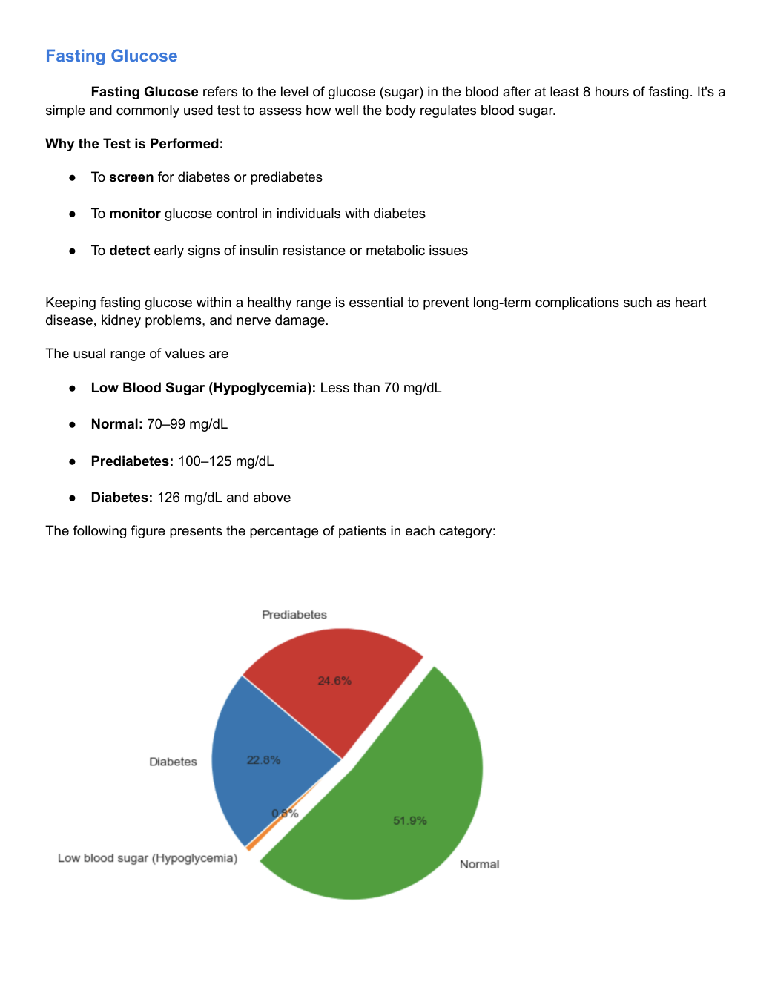
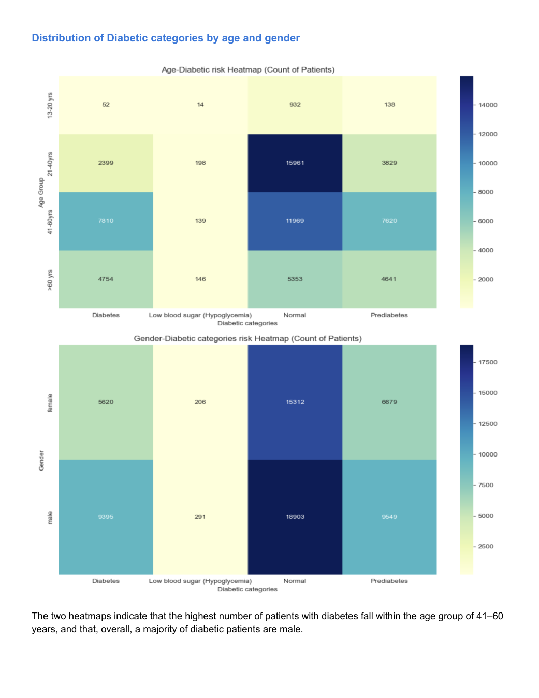
How are fasting glucose results distributed across diagnostic categories?
Rule-based classification using the thresholds documented in the report.
Cross-tabulation by age group and gender.
The report identifies the highest number of diabetic patients in the 41–60 age group, with a majority being male.
Key findings from the analysis
Demographic concentration
The largest concentration of patients in the analysed age–gender distribution is within the 41–60 age group.
Cardiovascular indicators
A substantial share of observations lies at or near borderline ranges, while 29.2% fall into the high-risk lipid-ratio category reported in the analysis.
Glucose patterns
The report identifies notable prediabetic and diabetic categories and highlights the 41–60 age group in the diabetes analysis.
Analytical value
The project demonstrates how raw diagnostic values can be converted into interpretable distributions, demographic comparisons and derived risk classifications.
This website is a portfolio presentation of the supplied analytical report. The visualizations and findings are reproduced from that report and are not intended for individual diagnosis or medical advice.
Explore the underlying work
The full PDF report remains available for readers who want to review the complete analysis and all documented reference ranges.
Open full report